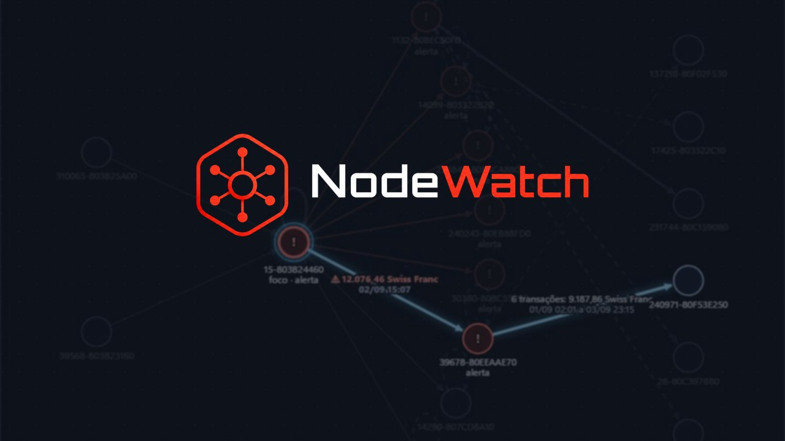

Grafos e ciclos
Busca em profundidade (DFS) para encontrar o caminho do dinheiro quando ele volta à conta de origem.
Na linha de comando: python src/main.py. O painel não procura ciclos.
Amostra tecnológica · [18/11/2026] Protótipo acadêmico · dados sintéticos
O NodeWatch transforma transações em um grafo, encontra ciclos e grupos suspeitos e usa machine learning para pontuar o risco.

Vídeo em breve [URL_VIDEO]
[TRANSCRICAO]
Quer os números, os conceitos e como rodar? Continue rolando.
Em investigações de lavagem de dinheiro, o que importa raramente está em uma única transação. Está em como o dinheiro circula: voltando à origem, passando por intermediárias, dispersando-se e concentrando-se de novo. Em uma tabela isso fica escondido; em um grafo, aparece como forma.
O sistema indica padrões para investigação. A decisão final é sempre do analista humano.
Capturas reais da interface em execução.
As capturas mostram o painel do analista com uma análise do HI-Small (sintético) de 01/09/2022 a 03/09/2022. A análise foi feita numa máquina com o modelo treinado. Esses dias fazem parte do treino do modelo, então os alertas da tela não medem desempenho.
Busca em profundidade (DFS) para encontrar o caminho do dinheiro quando ele volta à conta de origem.
Na linha de comando: python src/main.py. O painel não procura ciclos.
O algoritmo de Kosaraju agrupa contas que circulam dinheiro entre si, em tempo O(V+E).
Na linha de comando: python src/main.py --scc.
Random Forest em dois problemas independentes: estado da rede e lavagem em transações. Divisão por tempo e atributos que só usam o passado, para não vazar a resposta.
O painel usa só o modelo de lavagem.
Resultados com dados sintéticos (dataset IBM AML HI-Small). O período de teste foi consultado mais de uma vez, então diferenças pequenas não são melhoria comprovada. Não representam desempenho em dados reais.
0,46
Precisão média no teste. Um palpite aleatório daria 0,001.
0,75
Contra 0,71 de uma regra simples (repetir o estado atual). Para fluxos inéditos, o ganho quase some.
1,9%
É quanto o modelo recupera dos casos que não seguem nenhuma tipologia conhecida (cerca de 39% dos positivos do teste).
17.981/s
Em lote: atributos e score, sem o serviço. Medido em uma máquina de teste; não é garantia de desempenho.
Não. Ainda não há fonte ao vivo: o painel analisa um arquivo enviado ou escolhido, e só depois do clique em Analisar.
Não. Os dois modelos são independentes porque as bases não têm vínculo verificável entre si.
https://github.com/1s4ntos/NodeWatch (abre em nova aba).requirements.txt e requirements-ml.txt (Python 3.12 ou mais novo; testado no 3.14).python src/sentinel_ai.py e abra http://127.0.0.1:5000.docs/exemplos/transacoes_inventadas.csv ) ou o seu, no formato do IBM AML: Timestamp, From Bank, Account, To Bank, Account, Amount Received, Receiving Currency, Amount Paid, Payment Currency, Payment Format, com Is Laundering opcional. As mesmas colunas em português também valem.Uma conveniência para Windows. Os passos acima continuam valendo, inclusive em outros sistemas.
C:\NodeWatch.Inicializador Rápido e execute Iniciar_NodeWatch.bat.Se ele pedir a chave GEMINI_API_KEY, pressione Enter e continue sem ela: a chave é opcional para abrir o painel. Ela não fornece nem substitui o modelo de Machine Learning.
O inicializador também não traz o modelo. O painel abre e valida arquivos, mas gerar uma nova análise financeira continua exigindo o modelo treinado, que não está no repositório.
Gerar uma nova análise exige o modelo treinado, que não vem no repositório.
Num clone limpo, o painel abre e valida arquivos, mas uma nova análise financeira falha: o modelo (artefatos_ml/) fica numa pasta ignorada pelo Git. O treino documentado usa o IBM AML HI-Small, que também não está no repositório, e não há modelo pronto para baixar.
Abrir uma análise já gravada não roda o modelo de novo. Mas essas análises ficam na mesma pasta ignorada, então um clone limpo não traz nenhuma.
O painel funciona sem chave de API.
python src/main.py --input dados/exemplo_transacoes.csv . Os grafos da linha de comando não usam o modelo.
Sim, no formato do CSV acima. Validar funciona num clone limpo; gerar a análise depende do modelo treinado.
MIT, código aberto.